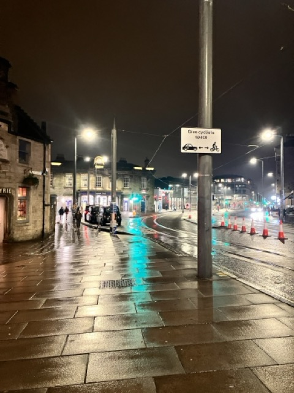
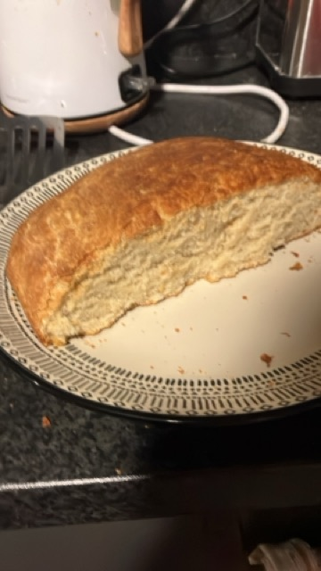
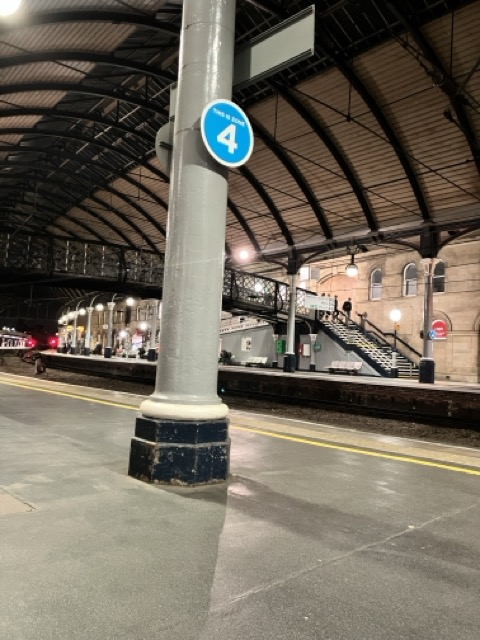
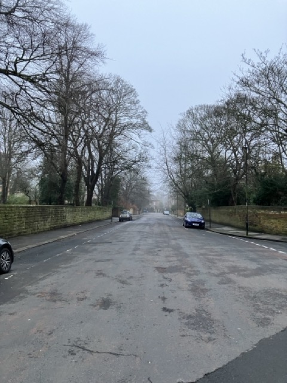
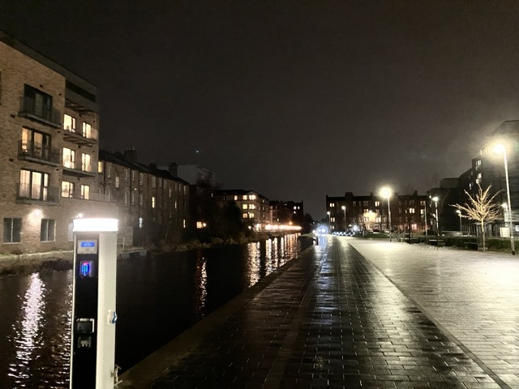
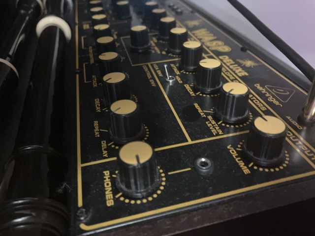
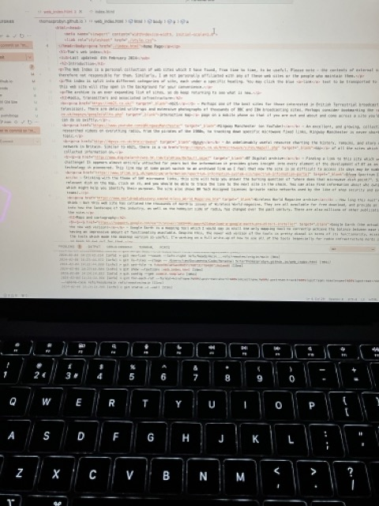
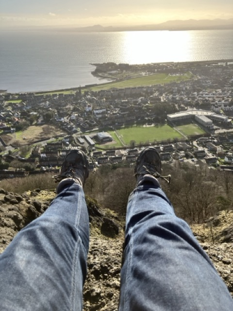
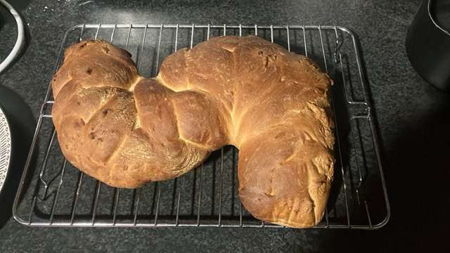

Recently, I have been significantly lessening my use of technology, and an important aspect of that is leaving my mobile phone at home when I go out. Naturally, this has been a tough process, though a very, very rewarding one, and I am in the process of a full writeup of my experience thus far. Sadly, though, that does mean that Diaries of the Magic Lantern will become a lot less regularly updated. Some day, I may find a way to return to the daily upload schedule, but for now, I see the process of lessening my reliance on digital technology to be more important. At some point, I will start a photos page, updated at regular though inconsistent intervals for those times when I do carry a camera with me. That will be linked here when I get round to it. For now though, thank you for looking at the Magic Lantern - it was fun whilst it lasted.
Since the summer of last year, I have wanted to create a project a bit like the DotML. The premise is simple - every single day of the year I will do two things towards it. I will take a photograph and write a short text description or contextual piece in one sentence. You might have heard of the application "BeReal", which I suppose this project is quite similar to, with the exception being that the purpose here is to contribute towards a personal project of documentation, rather than for any social purposes. Whatever I am doing on a particular day, whatever the weather, I will be attempting to contribute to the project.
Beyond the Magic LanternFebruary 15th: A variation on a theme, Dalry this time
February 14th: There's a theme developing here: A very wet walk through Haymarket
February 13th: A North-East delicacy: The Stottie cake

February 12th: A very wet walk through Morningside
February 11th: Not long to wait now...
February 10th: A misty Jesmond day

February 9th: Night-time in Newcastle
February 8th: The Union Canal

February 7th: What a view, what a day
February 6th: Been making music with the analogue today

February 5th: Edinburgh at night
February 4th: Webdev time: working on the new Web Index page
February 3rd: One of the most wonderful days this year - a trip to Burntisland and Craigkelly
February 2nd: Granted it may look like a worm, but today I attempted to make platted bread. It tasted excellent!

February 1st: The moon over Blackford Hill, sat atop the trig point